Tehlový 3 – izb. byt (74 m2) / Národná trieda / Košice
Sever, Košice
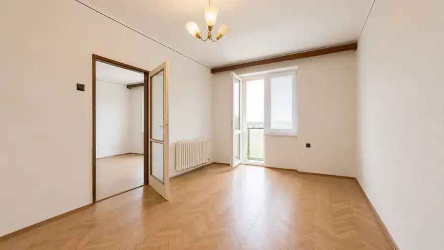
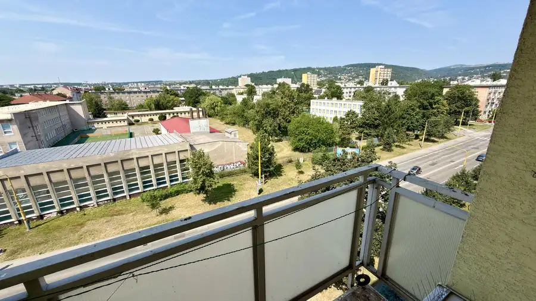
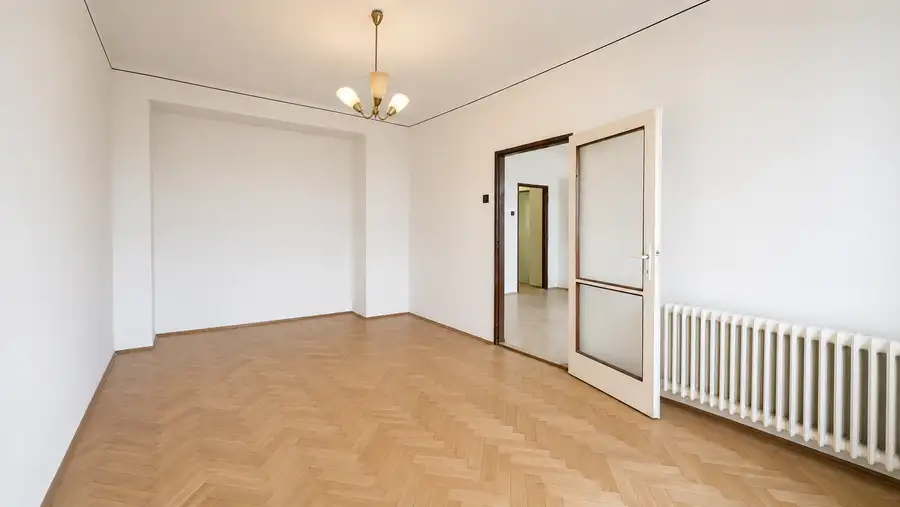
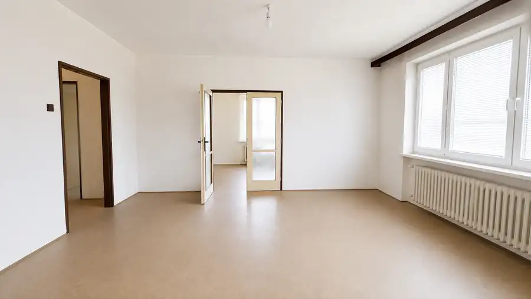
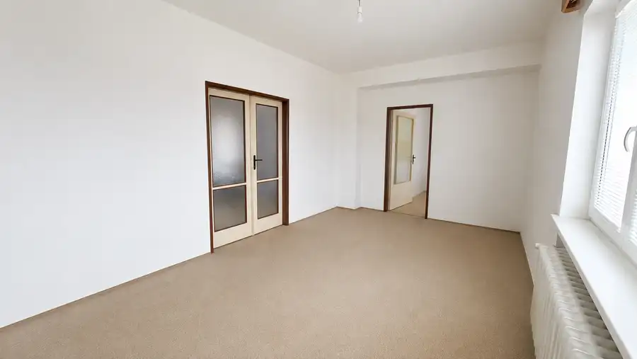
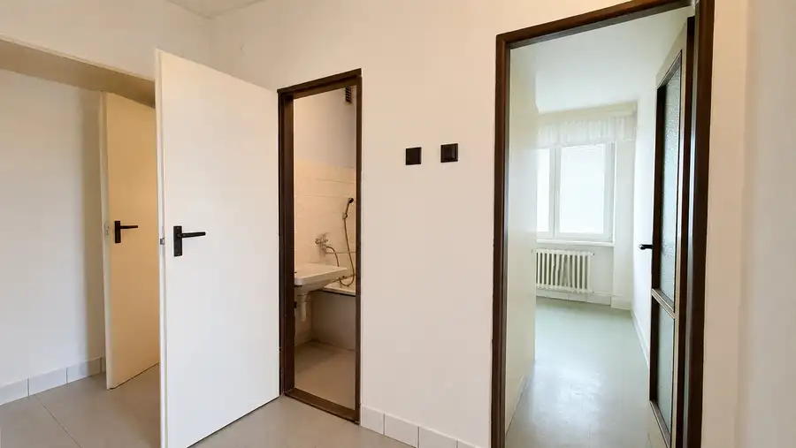
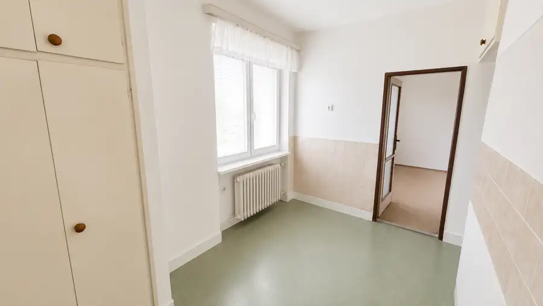
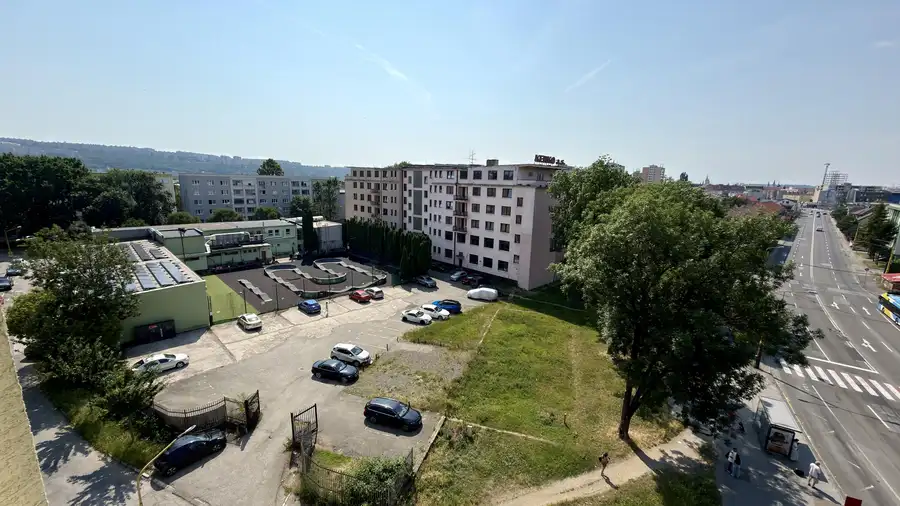
- Dispozícia3-izbový
- Plocha74 m²
- Poschodie5.
- StavPôvodný stav
- VlastníctvoOsobné
O nehnuteľnosti
Realitná spoločnosť PARTNES REAL Vám v exkluzívnom zastúpení ponúka na predaj priestranný tehlový 3 izbový byt v pôvodnom stave situovaný vo vyhľadávanej lokalite neďaleko centra mesta. Vďaka takejto polohe Vám tento byt ponúka komfortne bývanie s kompletnou občianskou vybavenosťou. Nachádza sa na ulici Národná trieda 38, Košice - Sever.Výmera bytu je štedrých 74 m2 a nachádza sa na 5. poschodí z 5 v bytovom dome, ktorý disponuje výťahom. Byt je dostatočne presvetlený počas celého dňa. Jeho orientácia je na Juho – východ (kuchyňa, izba) a Juho - západ (obývačka a spálňa s východom na balkón). Byt je v pôvodnom stave a teda vhodný pre tých, ktorý si chcú svoje vysnívané bývanie vytvoriť podľa vlastných predstáv. V celom byte sú osadené plastové okná a pod kobercami sa nachádzajú zachovalé pôvodné parkety. K bytu prislúcha pivnica.Dispozícia: po vstupe do bytu sa nachádzame v predsieni, kde priamo oproti nám sa nachádza ulička do kuchyne, po ľavej ruke máme samostatné oddelené wc a kúpeľňu. Po pravej ruke sa nachádza obývačka ktorá je do pravá priechodná do spálne s východom na balkón a do ľavá sa dostávame do izby. Cez túto spomínanú izbu sa vieme dostať aj do kuchyne.Bytový dom je kompletne zrevitalizovaný, obvodový plášť zateplený, taktiež strecha. Nachádza sa v ňom nový, moderný výťah a spoločne priestory sú pekné, udržiavané. Vďaka jeho výbornej polohe Vám ponúka nie len kompletnú občiansku vybavenosť (Klas potraviny, OC Beta, zastávky Mhd, materská a základná škola, Univerzita veterinárskeho lekárstva a farmácie,...), ale aj množstvo možností voľnočasových aktivít, ako je Areál Anička - ideálne miesto pre oddych a taktiež pre šport, Zimný štadión, kúpalisko a pod.Náklady na bývanie: 250,- € / mes.Cena nehnuteľnosti je 209.900,- €V prípade záujmu kontaktujte: Ing. Marek Vološinyi / senior maklér, kontakt: 0948 757 313, email: volosinyi@partnersreal.sk
Parametre
- Cena vrátane energií
- Nie
- Druh
- 3 izbový byt
- Dátum zverejnenia
- 24. 07. 2026
- Energie
- 250
- Podlažie
- 5
- Počet izieb / miestností
- 3
- Prechodová izba
- Áno
- Stav nehnuteľnosti
- Pôvodný stav
- Typ
- Predaj
- Typ konštrukcie
- Tehlová
- Umiestnenie
- Posledné podlažie
- Vlastníctvo
- Osobné
- Vybavenie
- Balkón, Pivnica, Výťah
- Úžitková plocha
- 74 m²
Kde to je


Mohlo by Vás zaujímať
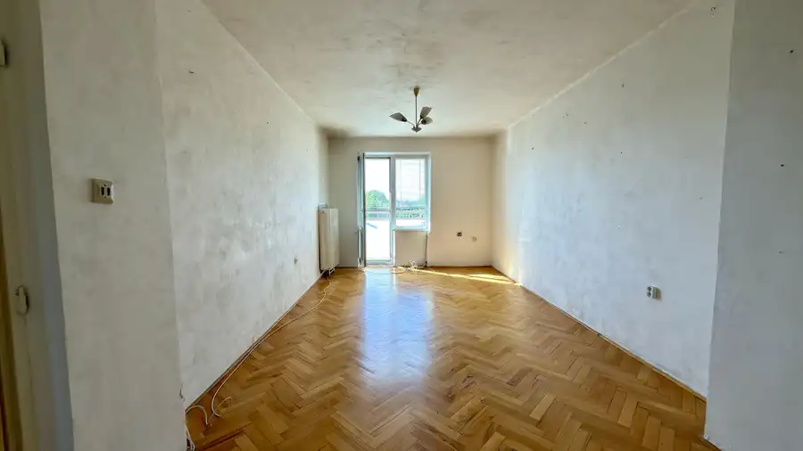
BytNové 205 000 €Tehlový 3 – izb. byt / Národná trieda / Košice – Sever Sever, Košice 3-izbový64 m²6. podlažie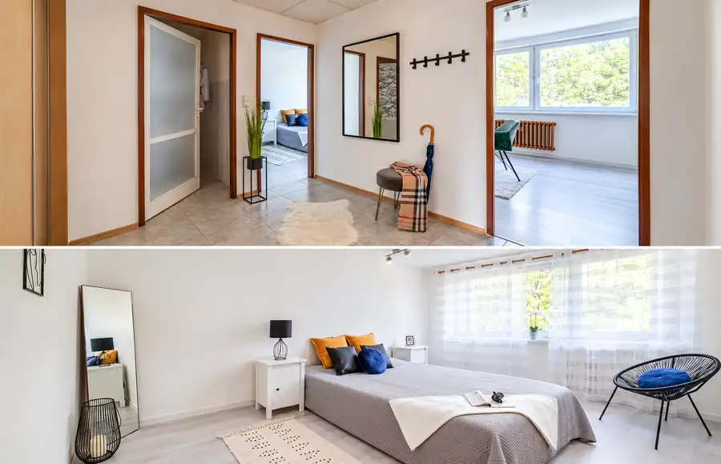
BytNové 210 000 €Praktický 3- izb. byt (69 m2) / Obrody / Košice - sídlisko Terasa Západ, Košice 3-izbový69 m²2. podlažie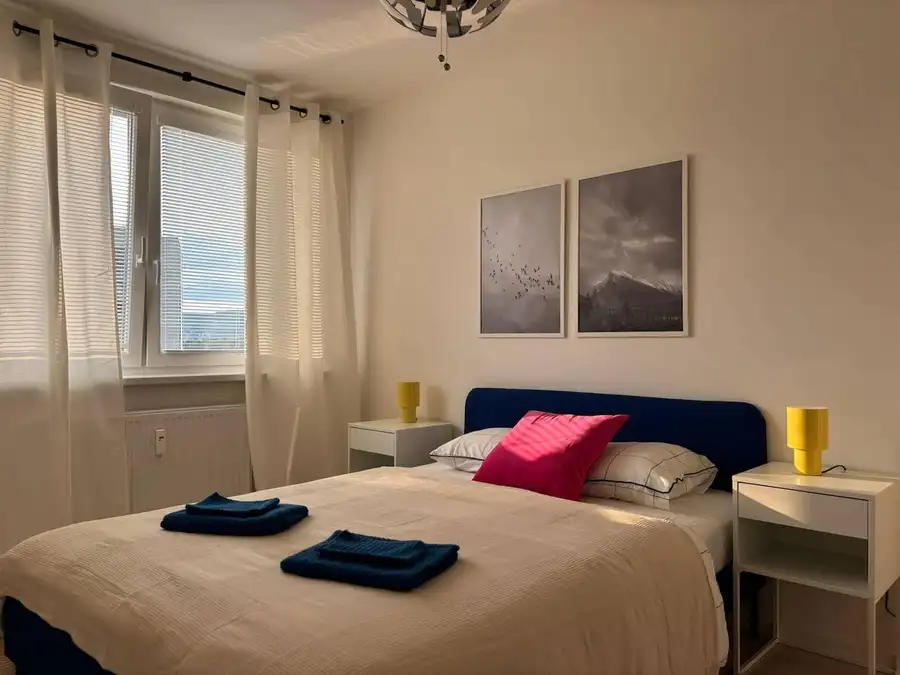
BytNové 210 000 €1,5 izb. byt (36 m2) / Lukratívna lokalita / Krivá / Košice - Juh Juh, Košice 2-izbový36 m²8. podlažie